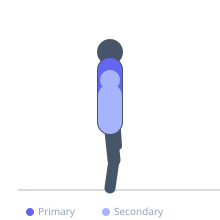
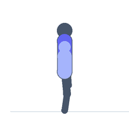

Exercise guide / Scapular Wall Slides
Scapular Wall Slides
Scapular wall slides are performed with the back flat against a wall, sliding the arms overhead while maintaining contact between the arms and wall throughout. They train thoracic extension, scapular upward rotation, and shoulder flexion in a controlled, low-load manner — making them an essential warm-up, postural correction, and shoulder rehabilitation exercise for overhead athletes.
Primary muscles
trapezius lower
Secondary muscles
deltoid anterior
erector spinae
Equipment


Starting position
- Stand with the back flat against a wall. Feet 10-20 cm away from the wall. Arms bent to 90 degrees at shoulder height, pressed against the wall — forearms and elbows maintaining contact.
Setup
- Ensure the entire back — lumbar, thoracic, and head — maintain contact with the wall. This is very challenging for those with thoracic kyphosis.
Steps
- Step 1: Begin with arms at 90-90 position (elbows at shoulder height, bent 90 degrees) against the wall.
- Step 2: Slide both arms overhead while maintaining full contact between arms and wall.
- Step 3: Try to reach arms overhead to a Y position.
- Step 4: Slide back to the 90-90 starting position.
- Step 5: Repeat.
Coaching cues
- Back flat on the wall at all times
- Arms slide — do not lift off
- Feel the shoulder blades rotating as the arms go overhead
Breathing
- Exhale sliding up. Inhale sliding down.
Range of motion
- 90-90 start position to full overhead Y.
Tempo
- 2-1-2-0
Common mistakes
- Arms losing contact with the wall during the slide — this defeats the purpose
- Lumbar hyperextension — back must stay flat throughout
Safety
- Appropriate for all fitness levels as a warm-up or mobility tool
- Avoid forcing range of motion — work within comfortable limits
Training
- rehabilitation: 10–20 reps
- rehabilitation: 2–3 sets
- Rest: {'rehabilitation': 60}